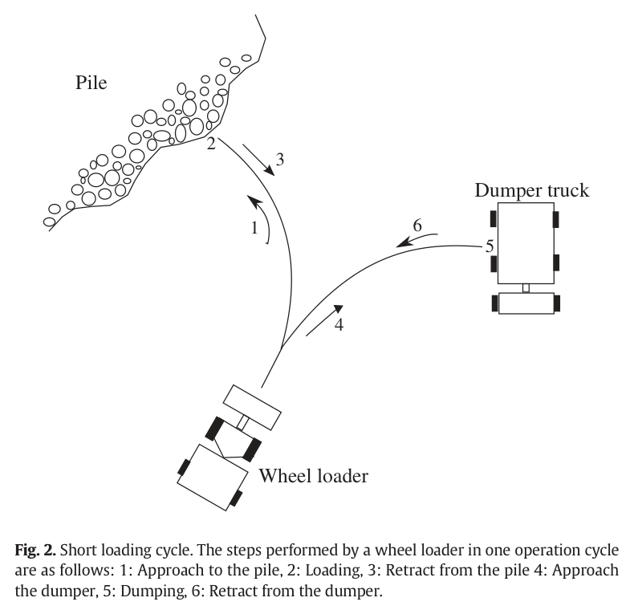
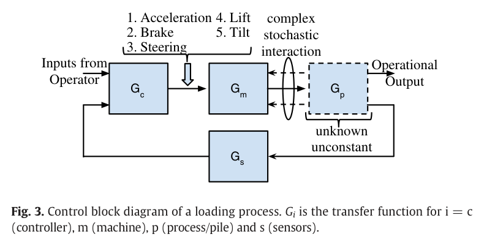

25초의 적재 사이클,
30년의 연구 과제
접근하고, 채우고, 물러나고, 비운다. 휠로더의 작업은 단순한 반복처럼 보인다. 그러나 매번 같은 명령을 내려도 버킷이 만나는 흙·자갈·파쇄 암석·눈의 성질은 달라진다. 더미의 겉모양을 알더라도 내부의 밀도와 저항까지 알 수 있는 것은 아니다.
리뷰가 인용한 선행 연구는 오랜 연구에도 완전 자율 토공 기계가 실현되지 못한 배경으로 이러한 변동성을 지목한다. 핵심은 기계를 움직이는 방법에 더해, 기계가 무엇과 어떻게 접촉하는지를 다루는 데 있다.

완전 자율에 이르기 전의 현실적인 단계
리뷰는 자동화를 다섯 단계로 나눈다. 중단기적으로 주목하는 단계는 사람이 원격으로 판단하면서 경로·충돌 회피·적재·덤프 기능의 도움을 받는 보조 원격 조작이다.
- LEVEL 01수동 운전
- LEVEL 02가시 원격
- LEVEL 03원격 조작
- LEVEL 04보조 원격 조작
- LEVEL 05완전 자율
가시 원격은 작업자가 기계를 직접 보며 조작하는 단계다. 보조 원격 조작에서는 일부 작업 기능을 자동화한다.
많이 채우는 것만으로는 충분하지 않다
좋은 적재는 버킷을 채우면서도 타이어와 기계를 보호하고, 연료와 시간을 함께 관리해야 한다. 더 큰 출력을 쓰면 항상 더 좋은 결과가 나오는 것도 아니다. 저항이 커졌을 때 스로틀을 더 밟는 행동은 오히려 바퀴 미끄럼을 만들 수 있다.
| 평가 항목 | 관찰할 문제 | 설계에 주는 요구 |
|---|---|---|
| 바퀴 미끄럼안전·유지보수 | 과도한 구동으로 타이어 손상 발생. 노트에 정리된 관련 비용 비중은 정비비의 20~25%. | 저항 증가에 대응하는 견인 제어가 필요하다. |
| 충돌안전 | 원격 후진 중 벽·낙석·배수로 등의 위험. 먼지·안개에 따른 감지 성능 제약. | 센서의 환경별 한계와 후진 시야를 고려해야 한다. |
| 채움 인자생산성 | 자동 기능이 숙련자 수준의 적재량을 내기는 흙에서도 어렵다는 보고. | 실린더 압력 기반 무게 추정 등으로 실제 적재 성과를 평가한다. |
| 연료운영 효율 | 리뷰에 제시된 운영비 비중은 30~60%. 전출력 적재는 연료와 마모에 불리. | 적재량과 함께 에너지 사용을 평가한다. |
| 주기 시간생산성 | 적재 단계의 개선 여지가 크지만 시간 단축과 연료 절감은 상충할 수 있음. | 사이클 시간 하나로 제어기를 평가하지 않는다. |
비용 비중은 리뷰에 소개된 수치 범위다. 특정 장비나 현재 현장의 비용 구조를 보장하는 값은 아니다.
목표는 정해진 경로를 완주하는 것이 아니라,
버킷을 잘 채우는 것이다.
기계는 모델링할 수 있다.
더미는 훨씬 어렵다.
기구·유압·구동계의 모델은 상대적으로 다루기 쉽다. 반면 버킷–매질 상호작용은 복잡하고 확률적이다. 1960년대부터 이어진 힘 모델 연구와 여러 후속 접근에도, 리뷰는 실시간 제어에 쓸 수 있는 신뢰할 만한 상호작용 모델이 충분하지 않다고 본다.
따라서 “모델링 불가”라는 진단은 어떤 모델도 만들 수 없다는 뜻보다, 다양한 매질에서 정확하고 계산 가능한 모델을 확보하기 어렵다는 실용적인 한계로 읽는 편이 적절하다.
구조와 동역학을 바탕으로 비교적 체계적인 모델링이 가능하다.
내부 상태를 알기 어렵고 작업 중에도 변한다. 접촉 저항의 예측이 핵심 난제다.

다섯 접근은 무엇을 가정하는가
제어 방법의 차이는 매질의 불확실성을 어디에서 처리하느냐에 있다. 정해진 경로를 따를 수도 있고, 힘에 반응해 경로를 바꿀 수도 있다. 반복 작업에서 보정값을 학습하거나 숙련자의 행동 규칙을 옮기는 방법도 있다.
| 접근 | 핵심 아이디어 | 한계와 검증 범위 |
|---|---|---|
| 궤적·위치 제어 | 더미 단면과 절단 궤적 사이의 부피를 최대화한다.Mikhirev, 1983 | 표면 형상만으로 내부 저항을 알 수 없다. 밀도 높은 매질에서는 포화·미끄럼으로 궤적을 따르기 어렵다. |
| 컴플라이언스 제어 | 저항에 따라 궤적을 수정한다. 임피던스·어드미턴스·2단 제어 등이 포함된다.Marshall, 2008: 버킷 실린더 압력을 어드미턴스 입력으로 제안 | 접촉에 적응하는 방향은 유망하지만, 리뷰 시점에는 실차 실험 근거가 제한적이었다. |
| 피드포워드·외란 관측기 | 더미를 외란으로 다루거나 반복 학습 제어(ILC)로 보정한다.Liu, 2010: 시뮬레이션 / Maeda, 2013: 1.5 t 장비·균질 흙 | 반복성이 낮은 파쇄 암석에서는 이전 작업에서 얻은 보정이 다음 작업에 통하기 어렵다. |
| 인공지능 규칙 | 퍼지·신경망·유한 상태 기계로 숙련자의 행동을 표현한다.Xiaobo, 1996 / Lever, 2001 | 기체별 수작업이 필요하다. 숙련자 행동을 재현해도 그것이 최적이라는 보장은 없다. |
| 강화학습 | 에피소드 단위의 작업에서 행동을 개선하고, 시연으로 초기화하는 방향을 제안한다. | 리뷰는 당시 굴착 적용 사례가 없다고 정리한다. 완전한 모델 없이 최적 성능을 보장하기도 어렵다. |
압력은 제어의 입력이 될 수 있다
특히 눈에 띄는 제안은 버킷 실린더 압력을 어드미턴스 제어의 입력으로 쓰는 것이다. 어드미턴스 제어는 힘이나 저항에 해당하는 신호를 받아 움직임을 조정한다. 압력을 단순한 상태 기록에 그치지 않고, 진행 방향과 속도를 바꾸는 피드백으로 사용하는 발상이다.
학습 기반 접근도 같은 문제의식 위에 놓인다. 정확한 더미 모델을 먼저 완성하기보다 경험을 통해 적재 행동을 개선하려는 것이다. 다만 리뷰의 강화학습 논의는 가능성의 제안이며, 현장 성능이 검증된 결과와 구분해야 한다.
버킷 밖에서도 자동화는 막힌다
적재 제어가 좋아져도 현장 전체가 자동화되는 것은 아니다. 어디를 파고 어디로 이동할지 알아야 하고, 작업자는 지연된 화면 너머의 상태를 판단해야 한다. 리뷰는 인지·항법·통신·작업자 경험을 하나의 시스템 문제로 다룬다.
더미에서 무엇을 볼 것인가
스테레오 카메라와 레이저로 진입 자세, 큰 돌, 채움 부피를 추정한다. 외부 형상에 관한 정보는 늘릴 수 있지만 내부 매질의 불확실성은 남는다.
기계와 트럭의 상대 위치
리뷰 당시 측위·항법에서는 레이저 기반 접근이 지배적이었고 상용 제품도 존재했다. 덤프 트럭과의 상대 측위에는 UWB가 논의된다.
지연은 조작 품질의 일부다
WLAN 버퍼로 300 ms 이상의 지연이 생길 수 있으며, TCP의 선두 차단 문제도 다룬다. 대안으로 SCTP의 다중 홈 기능, DCCP/TFRC 등을 검토한다.
필요한 감각을 돌려주는 일
필요한 정보만 제시하는 화면, 햅틱 조이스틱, 작업 계획기를 다룬다. 시각·청각·진동·힘 피드백을 통해 작업 상태를 전달하는 것이 과제다.
통신 수치는 리뷰가 다룬 맥락에 한정된다. 노트에 언급된 오디오 지연 허용치 400 ms 역시 전체 원격 조작 시스템의 안전 기준으로 일반화할 수 없다.
리뷰가 남긴 네 가지 연구 질문
리뷰의 무게중심은 더 정교한 궤적을 만드는 데서, 매질과 현장 조건의 변화에 적응하는 시스템으로 옮겨간다.
-
파쇄 암석에서도 적재할 수 있는가
실험 근거가 특히 부족한 영역이다. 더미를 정확히 모델링하기 어렵다는 조건 아래, AI와 학습을 결합한 접근을 검증해야 한다.
-
무선망과 프로토콜을 함께 검증했는가
프로토콜의 기능만 비교해서는 부족하다. 실제 무선 환경에서 지연과 통신 성능이 원격 조작에 미치는 영향을 확인해야 한다.
-
작업자는 기계의 상태를 충분히 느끼는가
영상 외에도 소리·진동·힘 피드백이 중요하다. 어떤 정보를 어떻게 전달해야 조작 성능을 회복하는지가 남은 질문이다.
-
적응하는 기계를 현장에 어떻게 연결할 것인가
모델 프리 심층 강화학습, 기계 간 통신, SLAM 기반 지도, 현장 관리 소프트웨어가 향후 방향으로 거론된다. 개별 적재 동작과 현장 운영을 함께 다루는 과제다.
이 리뷰를 HR35의 질문으로 바꾸면
아래는 제공된 연구 노트의 프로젝트 관점이다. 2016년 논문의 결과가 아니라 HR35의 모델링·제어·평가를 위한 해석과 검증 제안이며, 축 A~C·F는 노트의 내부 분류를 따른다.
① 기계 식별과 접촉 불확실성을 분리한다
노트는 기계 모델을 축 A~C, 접촉 모델을 축 F의 문제로 읽는다. 기계 부분은 식별을 통해 오차를 좁히고, 토양은 단일한 정답 모델보다 파라미터 범위나 관입 상태 분류로 다루는 방향이다. Egli(2022)와 Zhao(2020)는 이 관점에서 후속 검토 대상으로 연결된다.
② 궤적 오차만으로 굴착을 평가하지 않는다
HR35 트렌칭에서는 유량 포화와 정지로 추종 오차가 커질 수 있다. 노트가 연결한 서울대 MCV의 방향 유지·속도 축소, Egli(2022)의 토크 반응처럼 저항에 따라 움직임을 조정하는 접근도 평가 대상에 넣을 필요가 있다. 이때 확인할 것은 경로의 정확도와 함께 실제 작업 성과다.
③ 압력 6채널을 피드백 자원으로 본다
버킷 실린더 압력을 어드미턴스 입력으로 쓰자는 제안은 HR35 압력 계측의 활용 범위를 넓힌다. 이를 검토하려면 센서 count→bar 보정이 선행돼야 한다. 노트는 이 보정이 축 A·B·F를 함께 뒷받침하는 전제라고 본다.
④ 소형 장비의 안정성을 별도로 확인한다
채움 인자·연료·주기 시간·미끄럼은 HR35 평가 지표의 출발점이 된다. 노트가 제기한 “3.5 t 장비는 12 t 장비보다 베이스 미끄럼·들림이 쉽게 생길 수 있다”는 우려는 장비 조건별로 검증할 가설이다. 대형 장비의 성능 기준을 그대로 옮기기 전에 안정성 지표를 확인해야 한다.
⑤ 강화학습의 예측과 후속 성과를 구분한다
노트는 2016년의 강화학습 제안을 Egli(2022)와 ETH 계열 연구로 이어 읽는다. 다만 “예측이 실현됐다”는 결론을 확정하려면 후속 논문의 작업 조건, 사용 신호, 실차 검증 범위를 대조해야 한다. HR35에 적용할 수 있는지는 그 다음의 질문이다.
- 압력 채널의 단위 보정과 측정 신뢰도 확인
- 궤적 추종과 저항 반응 제어의 작업 성과 비교
- 적재량·에너지·시간·미끄럼·들림을 함께 기록
- 후속 학습 연구의 실험 조건과 HR35의 차이 대조
자동 적재의 기준을 바꾸는 질문
이 리뷰를 읽고 나면 제어기의 성공을 묻는 방식이 달라진다. “주어진 궤적을 얼마나 정확히 따랐는가?”에 더해 “저항이 달라져도 얼마나 잘 채우고, 안전하고 효율적으로 끝냈는가?”를 물어야 한다.
2016년 리뷰가 제시한 방향은 분명하다. 모델링할 수 있는 기계는 정교하게 다루고, 불확실한 접촉에는 반응할 여지를 둔다. 보조 원격 조작, 컴플라이언스 제어, 학습 기반 접근을 비교할 때도 이 질문이 출발점이 된다.
출처와 해석의 범위
Dadhich, S., Bodin, U., & Andersson, U. (2016). Key challenges in automation of earth-moving machines. Automation in Construction, 68, 212–222.
논문 보기 · DOI 10.1016/j.autcon.2016.05.009
저자 소속: Luleå University of Technology · ProcessIT Innovations. 문헌 유형: 리뷰 논문.
- 작성 근거. 이 글은 제공된 Obsidian 논문 요약 노트를 편집·재구성했다. 원문 및 개별 선행 연구와의 독립 대조를 수행한 체계적 문헌고찰은 아니다.
- 시점. 자율 운전의 실현 여부, 강화학습 적용 사례, 상용화 현황 등은 2016년 리뷰의 기술 범위를 설명한다. 노트 작성일인 2026년의 최신 동향을 뜻하지 않는다.
- 수치. 키루나 적재량, 약 5%의 보조 기능 개선, 비용 비중과 통신 지연은 제공된 노트에 정리된 값이다. 현장 조건·분모·측정 방법의 세부 비교에는 원문과 해당 인용 문헌 확인이 필요하다.
- 선행 연구. Maeda, Hemami, Almqvist, Vaha, Zweiri, Singh, Luengo, Marshall, Liu, Mikhirev, Xiaobo, Lever 등의 언급은 리뷰 요약을 통한 간접 참조다. Egli(2022), Zhao(2020), 서울대 MCV는 HR35 해석에 포함된 후속 참조이며, 이 노트에는 완전한 서지 정보가 없다.
- 그림과 이용 조건. 그림 1·2는 제공된 원문 Figure 2·3 이미지다. 노트에 표시된 원문 라이선스는 CC BY-NC-ND이며, 이미지에도 원출처의 이용 조건이 적용된다. 본문 요약과 프로젝트 해석은 원문 저자의 직접 발언과 구분했다.